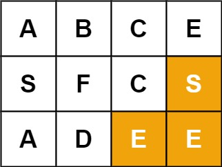

79. 单词搜索
每个格子试作起点做 DFS；进格前把字符改成 # 当 visited，四方向递归，回溯时恢复原字符。
思路
dfs(i, j, k)表示「从 (i,j) 接着匹配word[k..]」；外层每个格子都试作起点，找到就提前停。- 越界或
board[i][j] != word[k]立即剪掉；k走到最后一位且匹配，返回true。 - 原地标记：递归前
board[i][j] = '#'，天然挡住本路径重复踩格；返回前必须恢复，否则挡住别的路径。 - 已走过的格子的
#让四方向只剩最多 3 个新分支，复杂度是 3^L 而非 4^L。
图解
最优解
1class Solution {2 public boolean exist(char[][] board, String word) {3 int m = board.length, n = board[0].length;4 boolean found = false;5 // 每个格子都试作起点；一旦找到就提前收工6 for (int i = 0; i < m && !found; i++) {7 for (int j = 0; j < n && !found; j++) {8 found = dfs(board, word, i, j, 0);9 }10 }11 return found;12 }13 14 // 从 (i,j) 出发，接着匹配 word[k..]15 private boolean dfs(char[][] board, String word, int i, int j, int k) {16 if (i < 0 || i >= board.length || j < 0 || j >= board[0].length) return false;17 // 字符对不上，剪掉18 if (board[i][j] != word.charAt(k)) return false;19 if (k == word.length() - 1) return true; // 最后一个字符也对上了20 char keep = board[i][j];21 board[i][j] = '#'; // 原地标记：这条路径不再踩这格22 boolean hit = dfs(board, word, i - 1, j, k + 1) || dfs(board, word, i + 1, j, k + 1)23 || dfs(board, word, i, j - 1, k + 1) || dfs(board, word, i, j + 1, k + 1);24 board[i][j] = keep; // 回溯：恢复这格，别的路径还能用25 return hit;26 }27}题目
给定一个 m x n 二维字符网格 board 和一个字符串单词 word 。如果 word 存在于网格中，返回 true ；否则，返回 false 。
单词必须按照字母顺序，通过相邻的单元格内的字母构成，其中“相邻”单元格是那些水平相邻或垂直相邻的单元格。同一个单元格内的字母不允许被重复使用。
示例 1：

输入：board = [['A','B','C','E'],['S','F','C','S'],['A','D','E','E']], word = "ABCCED" 输出：true
示例 2：

输入：board = [['A','B','C','E'],['S','F','C','S'],['A','D','E','E']], word = "SEE" 输出：true
示例 3：

输入：board = [['A','B','C','E'],['S','F','C','S'],['A','D','E','E']], word = "ABCB" 输出：false
提示：
m == board.lengthn = board[i].length1 <= m, n <= 61 <= word.length <= 15board和word仅由大小写英文字母组成
进阶：你可以使用搜索剪枝的技术来优化解决方案，使其在 board 更大的情况下可以更快解决问题？
题面取自力扣当前版本。
数据快照 2026-11-04。题面版权归力扣所有，本站点仅供本人学习使用，请勿对外发布。